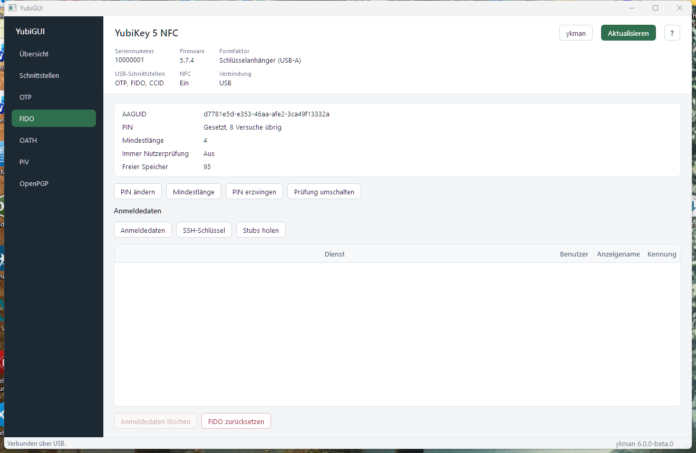

FIDO
Die Seite zeigt den Status des FIDO2-Moduls: AAGUID, ob ein PIN gesetzt ist, wie viele Versuche bleiben, die Mindestlänge, ob jede Anmeldung eine Nutzerprüfung verlangt, den freien Speicher und, wenn der Key einen Sensor hat, die Zahl der Fingerabdrücke.

PIN und Prüfung
- PIN ändern oder PIN setzen. Der PIN geht an die Konsole von
ykman. Unter Windows kann genau dieser Aufruf eine erhöhte Sitzung brauchen. Die übrige Oberfläche bleibt ohne Erhöhung. - Mindestlänge lässt sich nur erhöhen. Kürzer geht nur über einen FIDO-Reset, und der löscht die Anmeldedaten. Dafür muss die Seriennummer eingetippt werden.
- PIN erzwingen sperrt den bisherigen PIN, bis er geändert wird. Bis dahin sind die übrigen FIDO-Aktionen gesperrt.
- Prüfung umschalten schaltet die dauernde Nutzerprüfung um. Danach verlangt jede FIDO-Anmeldung den PIN oder einen Fingerabdruck, auch wenn der Dienst das nicht verlangt. Auf einem FIPS-Key lässt sich das nicht wieder ausschalten. Der Knopf erscheint, wenn der Key das kann.
Anmeldedaten
Anmeldedaten liest die auffindbaren Einträge erst nach dem PIN. Die Tabelle zeigt Dienst, Benutzer, Anzeigename und Kennung. Anmeldedaten löschen gilt für einen gewählten Eintrag und verlangt die Seriennummer.
SSH-Schlüssel und Stubs holen sitzen in derselben Zeile. Beide bleiben grau, solange kein FIDO-PIN gesetzt ist, der PIN geändert werden muss oder ssh-keygen fehlt. Unter Windows ist das der optionale OpenSSH-Client. Der Ablauf steht auf der Seite SSH-Schlüssel.
Fingerabdrücke
Hat der Key einen Sensor, erscheint darunter der Abschnitt Gespeicherte Fingerabdrücke. Die Liste kommt erst nach dem PIN. Hinzufügen legt den Finger mehrfach auf den Sensor. Umbenennen und Löschen gelten für einen Abdruck. Löschen verlangt die Seriennummer.
Zurücksetzen
FIDO zurücksetzen löscht die FIDO2- und U2F-Anmeldedaten und setzt den PIN zurück. Dafür muss die Seriennummer eingetippt werden. Danach wartet ykman auf Abziehen, Wiedereinstecken und die Berührung. OTP, OATH, PIV und OpenPGP bleiben. Der Reset ist gesperrt, solange PIV eingerichtet ist, weil ein vollständiger Werksreset den ganzen Key leeren würde.
Blinkt der Key, wartet das Fenster auf die Berührung. Der Abbruch beendet den ykman-Prozess, damit ein hängender Touch den Key nicht blockiert. Liegt der Key auf einem Lesegerät, die Anmeldedaten per USB lesen. Die Freigabe vom Auflegen ist schnell verbraucht.